40th SEANET Convention

Kuala Lumpur Weat Malaysia
22.Nov-27.Nov.2012
|
◎ 40th・SEANET CONVENTION 2012 2012年のSEANET・CONVENTIONは11月17日-21日の5日間、Malaysia(9M2)の首都クアラ・ルンプール(Kuala Lumpur＝KL)で開催されました。 西マレーシア(9M2)国内でSEANETが開催されるのは、2003年の第31回大会のJohor Bahru以来ですが、 首都のクアラ・ルンプール（KL）での開催は、意外な事に40回の歴史あるSEANETの中で、今回は1975年開催の第5回以来2度目となります。 マレー半島の西部に位置する首都のクアラ・ルンプールは、19世紀の中頃に"スズ鉱山の町"として開拓され、 現在は人口約180万人の大都市に発展しています。 第二次大戦後にマラヤ連邦の首都に指定されたクアラ・ルンプールは、1974年に連邦政府の直轄地となり、 スズ貿易が衰退した後も町の成長は衰える事なく、ここ10年ほどで急激な近代化を果たしています。 町のシンボルとなっている「KLタワー」は1996年に建ち、1998年には「ペトロナス・ツインタワー」も完成。 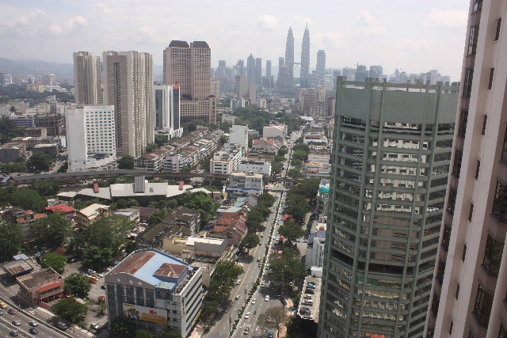 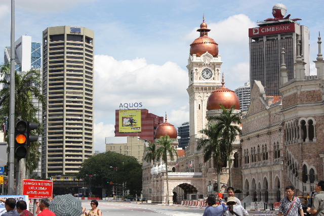 西マレーシアの玄関口となるクアラ・ルンプール国際空港(Kuala Lumpur International airport=KLIA)は1998年6月30日に開港、 KL市街地から約77Km離れた場所にあります。この新空港の斬新な建物は日本人デザイナーの黒川紀章氏によるデザイン。 西マレーシアのKLIAの同じ滑走路を使用するスルタン・アブドゥル・アジスシャー空港(スパン空港)の二つのターミナルがある。 スパン空港は最近就航を始めた、格安航空会社専用ターミナル(LCC-T)は空港敷地をぐるりと回るため、 KLIAのメイン・ターミナルビル(MTB)から10kmほど離れている。日本からLCC便を使う時には注意が必要です。 スパン空港(旧空港)はLCC便の他、離島などのローカル線の空港として使用されています。 、 空港から市内までのアクセスはクーポン制を使用する空港タクシーが主流でしたが、現在はこのKLIAからKL市内のKLセントラル駅までを、 15-20分間隔で「KLIAエクスプレス」がノンストップの所要時間約28分で運行されています。 ◎ 2012・SEANET CONVENTION 会場 2012年のSEANETの開催場所となった「Dynasty Hotel」は近代ビル群がそびえるKL市内の北側に位置するPWTC(Putra World Trade Centre)の近くにあり、 高級ホテルが林立している中心街。 中国系の客が多いこの29階建てのホテルも現在ではかなり古さを感じさせ、最新の"旅行案内書"では紹介されていません。 ホテルの29階の最上階にプールがあり、今回はこのプールサイドにアンテナ(2EL＆G5RV)が設置され、SEANETの記念局・9M4SEAが運用されました。
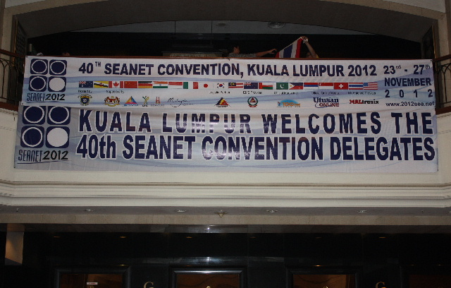 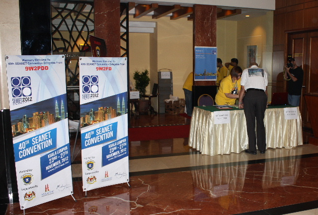 ホテルのロビーに掲げられた歓迎の横断幕と各国の旗/ホテル・ロビーの受付
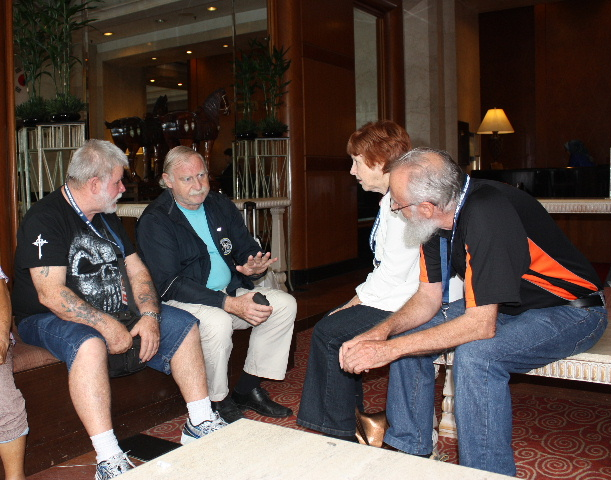 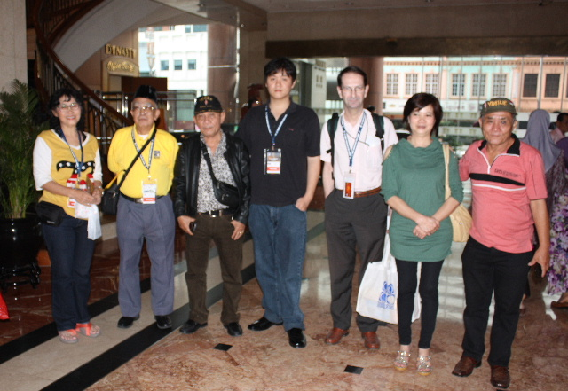 "Eyeball QSO"/次々と到着する参加者。
屋上に設置された記念局・9M4SEA 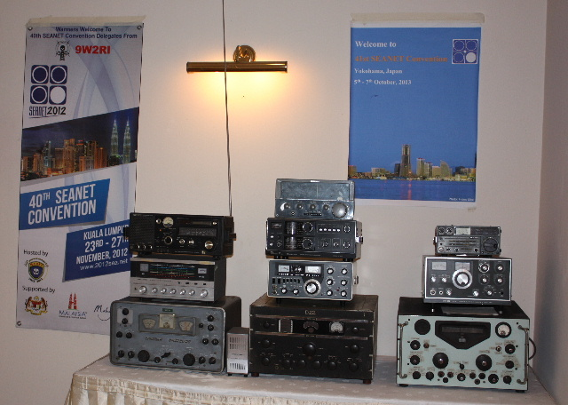 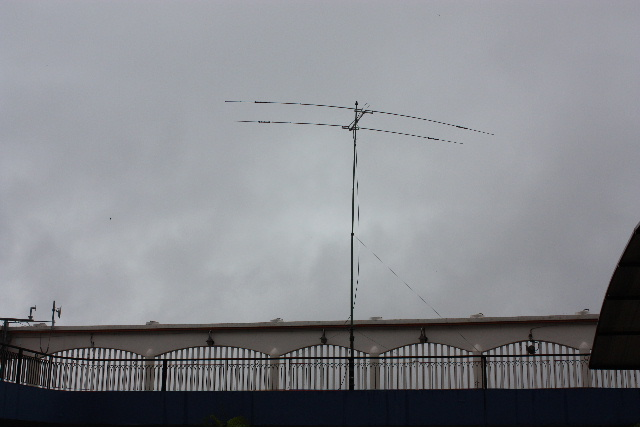 記念局の横に展示されている無線機。壁には2013年開催の「横浜大会」のポスターも 29階のプールサイドに設置されたアンテナは2ELとG5RV。
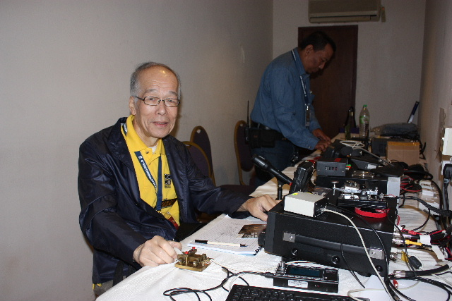 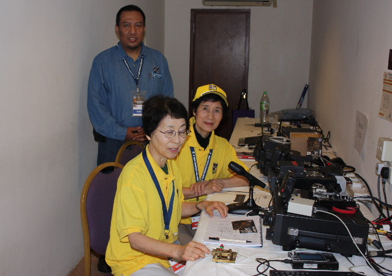 (L)記念局を運用するJA1RJU/(R)JF1WMY(手前)、7K3EOPの両局
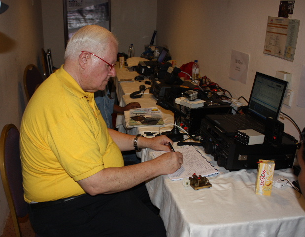 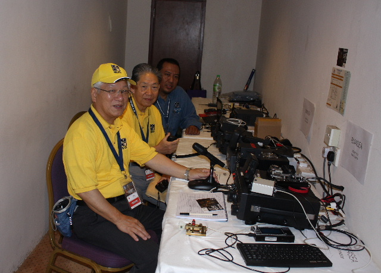 (L)9M4SEAを運用するK3ZO・Fred/(R)JA4DLP(手前).JA3AER
Date Time(LMT) Events Venue/Remarks
-------------------------------------------------------------------------
23rd November 09:00-22:00 Registration Dynasty Hotel
(Friday) 20:00-22:00 Welcome Dinner Dynasty Hotel
-------------------------------------------------------------------------
07:00-08:30 Breakfast Dynasty Hotel
24th November 08:30-17:00 Seminar & Workshop Dynasty Hotel
(Saturday) "Kindly reter to Seminar & Workshop Page
-------------------------------------------------------------------------
20:00-23:00 Gala Dinner Dynasty Hotel
-------------------------------------------------------------------------
07:00-08:30 Breakfast Dynasty Hotel
25th November 08:30-12:00 Departure for Kuala Lumpur City Tour
(Sunday) 12:30-14:30 Lunch
14:30-17:30 Kuala Lumpur City Tour (continue)
20:30-22:30 Dinner(Flag hand-over) PJ Club,PJ
-------------------------------------------------------------------------
07:00-08:30 Breakfast Dynasty Hotel
26th November 08:00-12:30 Departure for Tour
(Monday) 12:30-14:30 Lunch Kuala Lumpur
14:30-17:30 Tour(Continue)
20:30-22:30 Farewell Dinner Dynastay Hotel
-------------------------------------------------------------------------
07:00-08:30 Breakfast Dynastay Hotel
27th November 08:30-12:00 Closing Ceremony Dynastay Hotel
(Tuesday)
12:00-14:30 Check-out & Lunch
-------------------------------------------------------------------------
|
|
◎ "SEMINAR & WORKSHOP" 大会の2日目は朝食後からホテル内のホールで午前中は「Seminar」、昼食を挟んで「Workshop」が行われました。 盛りだくさんの講演会は興味を引く話題が満載で楽しめたものの、会場の冷房が効き過ぎで"フリーズ状態"に。 さすがに午後には耐えられなくなって？参加者は半減。 この日一歩も外出しなかった参加者には"辛い一日"でもありました。 午前中の講演では、2013年に「横浜市」で開催が予定されている「SEANET 2013」のプレゼンテーションを急遽行う事になり、 「SEANET・YOKOHAMA」の大会会長を務めるJA1BRK・米村さんが「開催地・横浜」の紹介をスライドと動画を交えて行いました。 次期開催地のプレゼンテーションは、本来なら最終日の「Closing Ceremony」でSEANETのペナント(旗)の引き継ぎと共に行われる事になっていますが、 今回は最終日の午後に帰国する日本からの参加メンバーが搭乗便(LCC)の時間に間に合わなくなるため、急遽日程を変更して行われたもの。 SEANETのペナント(旗)の引継ぎは翌日の晩餐後にマレーシア(9M2)から日本(JA)の代表に引き継がれました。
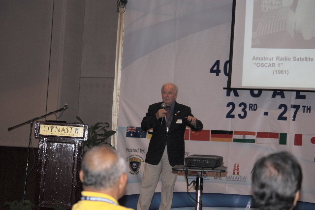 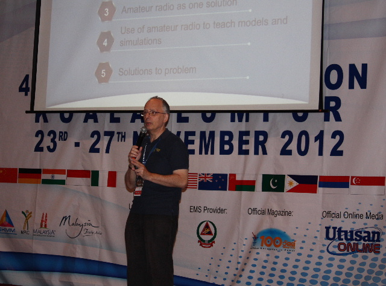 ZL3QLによるAMSAT-NZの紹介/G3ZCの技術解説
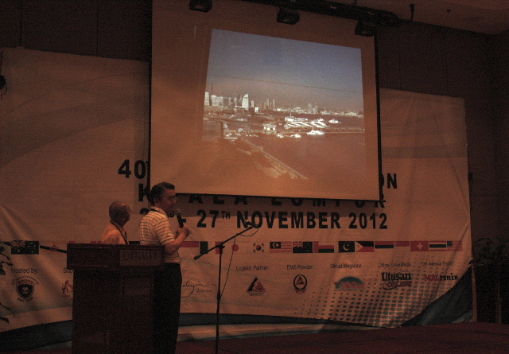 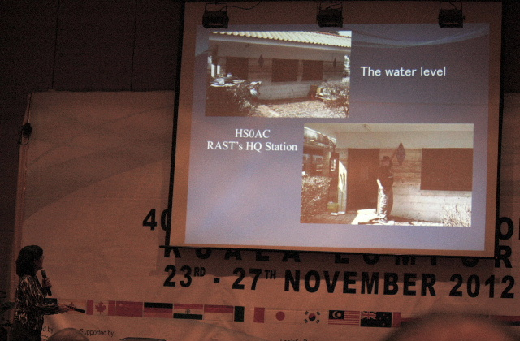 「2013年Yokohama大会」を紹介するJA1BRK/HS1ASCからタイ国の洪水被害の報告
|
◎ SEMINAR & WORKSHOP |
|
◎ GALA DINNER(晩餐会)
SEANETのメイン・エベントとなる「晩餐会=Gala Dinner」は、セミナー終了後の同会場で20:00時から開始されました。 例年通り、各国の民族衣装に着替えた参加者で華やかな「懇親会」のパーティーとなりました。 今年は新たにカナダ(CANADA)、イタリア(ITALY)、オマーン(OMAN)からの参加者も加わり"親交の輪"もさらに広がりました。 懇親会のオープニングは、地元ダンサーによる歓迎セレモニーで開始。日本の空手に似た武術(マレー拳法=シラット)の演技や、 伝統音楽で男女が舞う民族舞踊が興味を引いていました。 「2012年SEANET・CONTEST」の表彰式や参加各国への感謝状の贈呈などに続き、 お馴染みとなっている参加各国の"余興"が、オーストラリアを皮切りに、自国の特徴あるポピュラーソングなどがABC順に各国から披露されました。 22局と地元開催国(9M2)に次いで参加者の多かった日本は、参加者全員によるコーラス。 昨年までの"定番"だった「上を向いて歩こう」から、今年は童謡「故郷」と「赤とんぼ」の2曲が新たに披露されました。 昨年のブルネイ大会と同様、イスラム教のマレーシアも"アルコール"抜きの宴会(パーティー)でしたが、 大盛り上がりの懇親会は23:00時過ぎまで続きました。 この日、セミナーから会場に張り付いていた参加メンバーには長い一日となりました。 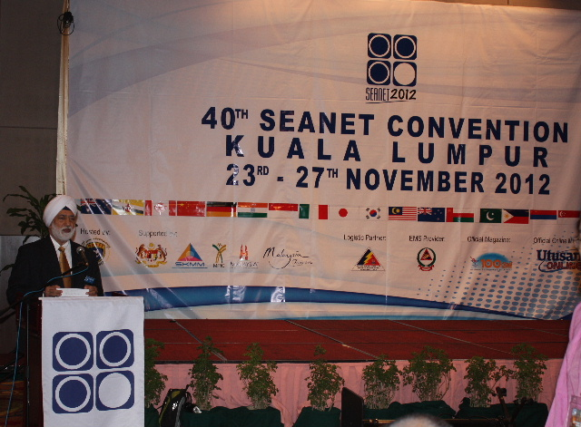 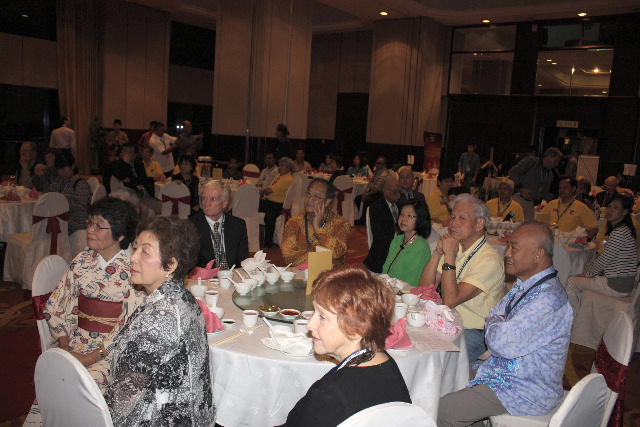 地元のOM、9M2KN・Kenさんの挨拶/懇親会の全景
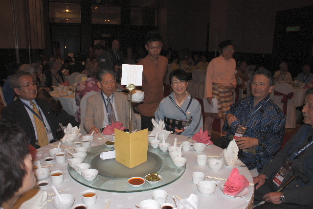 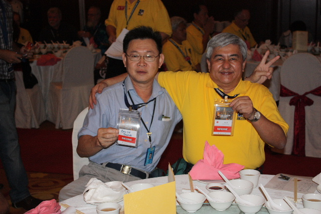 日本から参加の皆さん/9M2SW(左)とJA1LZK・海老原さん
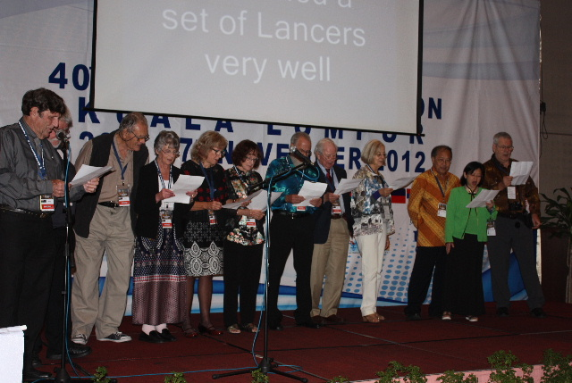 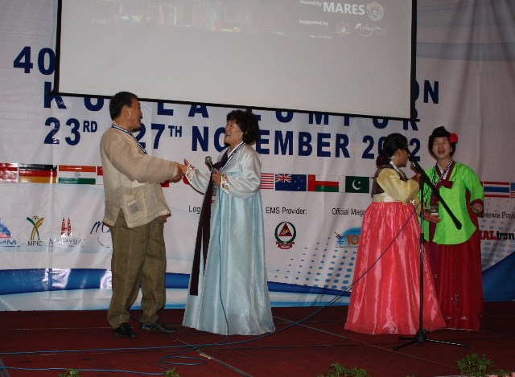 オーストラリア・グループの合唱/民族衣装の"チョゴリ"で踊る韓国勢
◎ "Kuala Lumpur City Tour"
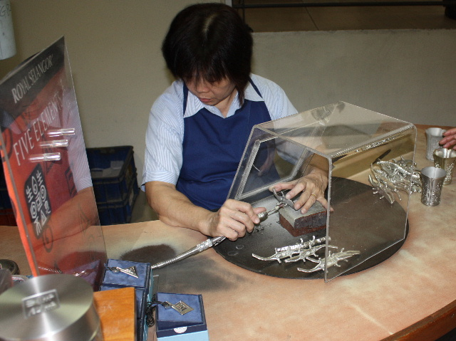 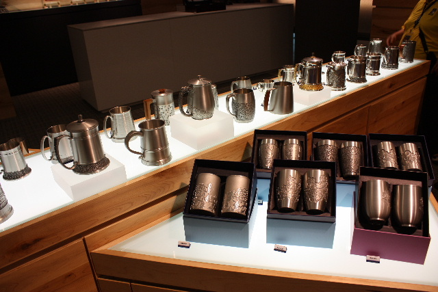 スズ工芸の加工作業中の女性/スズ工芸品の販売エリア
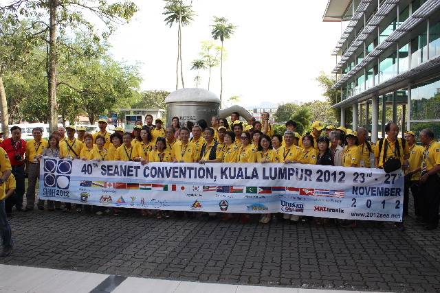 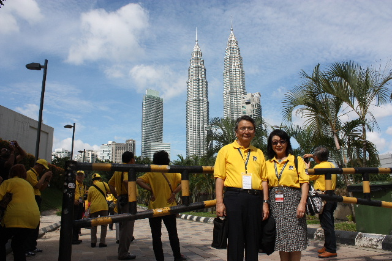 スズ工芸製造工場前で..記念撮影/KL・ツインタワーをバックに
KL郊外にある王宮(Royal Palace)、イスタナ・ネガラ(Istana Negara)を訪問。 この王宮の建物は美しい公園の中にあり、厳重に警備された正門で仕切られた、奥の緑の芝生と池に囲まれた丘の上にあります。 正門には、赤い英国風の制服を着た騎馬兵と、白いマライ(Malay)風の制服の衛兵が門の左右を警備しています。 この王宮では、英国のバッキンガム宮殿なみの厳かな護衛兵の交代式が観られました。 護衛兵や騎馬兵と一緒の記念撮影は自由で、訪れた観光客の人気の的になっていました。SEANETのメンバーもこの正門前の広場で全員の集合撮影。
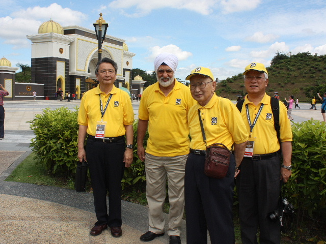 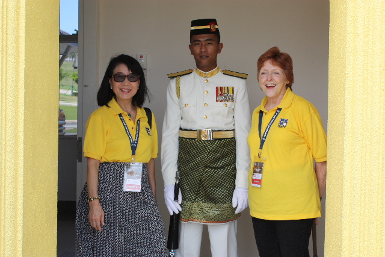
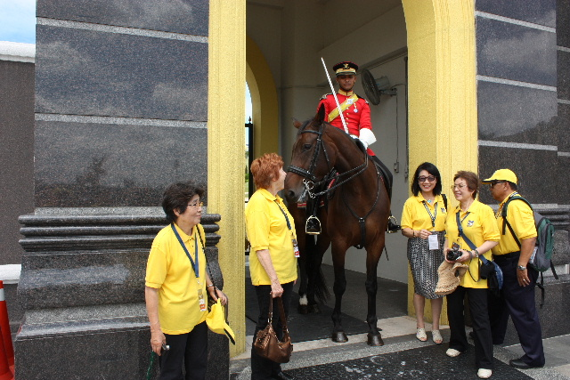 王宮前の騎馬兵と記念撮影
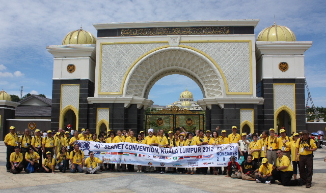 王宮(Istana Negara)正門前の広場で集合写真
|
|
◎ 新行政未来都市(プトラジャヤ=Putrajaya)巡り この日のツアーの最後は、クアラ・ルンプールの中心から空港(KLIA)方面へ40分ほど離れた新行政未来都市(プトラジャヤ=Putrajaya)巡りへ。 この新行政未来都市は、KL郊外のパーム林を切り拓いて造り上げられたマレーシアの発展を象徴する新しい行政都市。 現在は首相官邸や諸官庁などがKLの旧市街から移され、今日の新しい政治、行政の中心地となっています。 この日の「Dinner」は、KLの「SEANET」で初めて"アルコール解禁"で乾杯！。
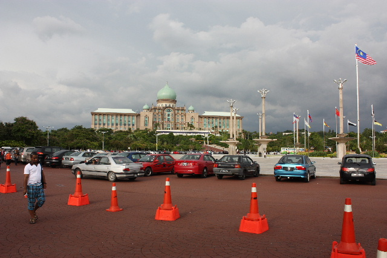 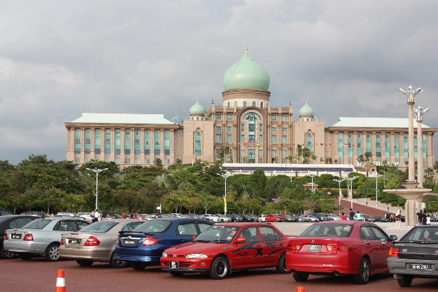
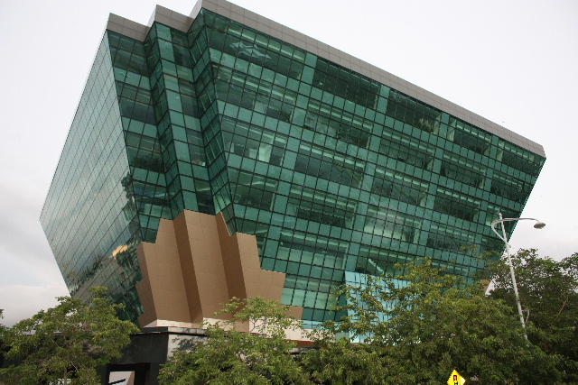 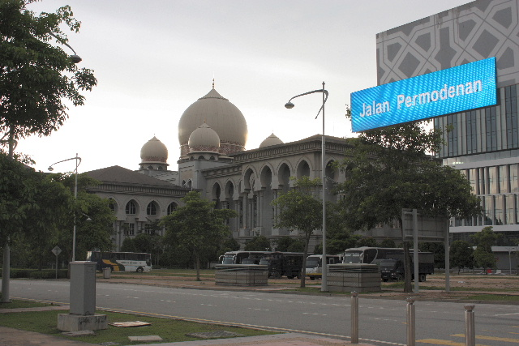 KLの新行政未来都市(プトラジャヤ=Putrajaya)
3日目の"DINNER"では初めてアルコールが...
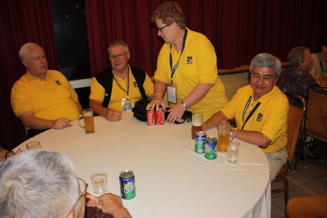 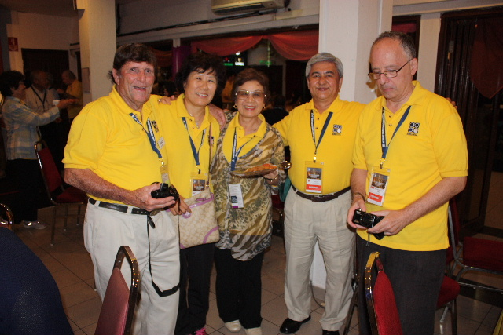
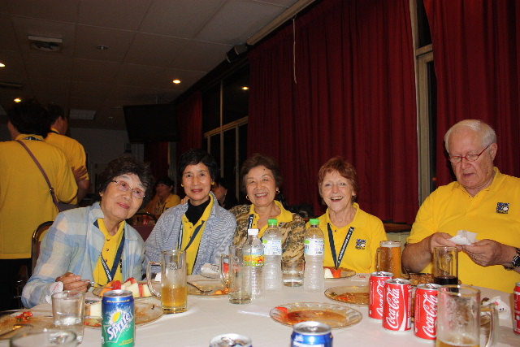 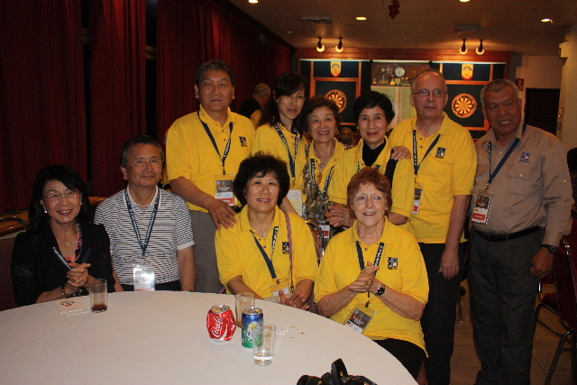
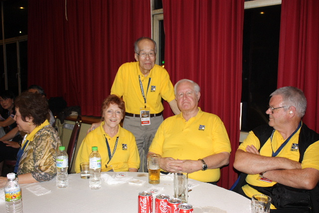 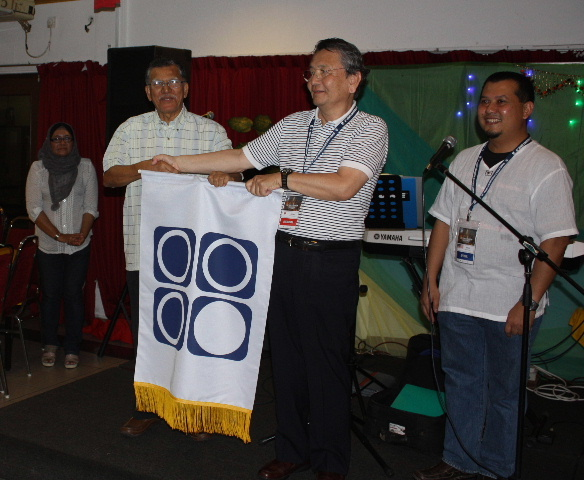 右の写真は初日の「SEMINAR」で渡す予定だったSEANETのペナント(旗)の引き継ぎ式
|
|
◎ MALAYSIAの航空機管制を見学 ツアー2日目の月曜日は、1998年6月に開港したクアラ・ルンプール新空港(KLIA)と、現在は国内便とLCC便のターミナルとして使われている、 スパン空港の両空港をコントロールしている民間航空局(DCA=Department of Civil Aviation)の管制業務を見学。 空港の管制室を直に見学出来るのは珍しく、日本では簡単には経験の出来ないコース。 HF帯を使って航空機との管制業務に携わっているオペレーターは、 "イスラム教"の女性が被る「ヒジャブ」と言うスカーフ様の布で頭髪を隠している女性職員がほとんどでした。
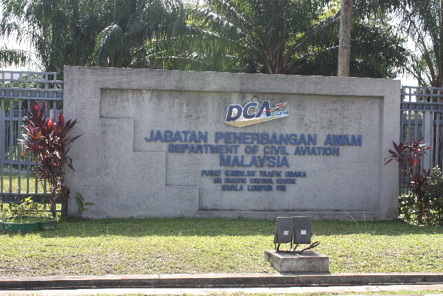 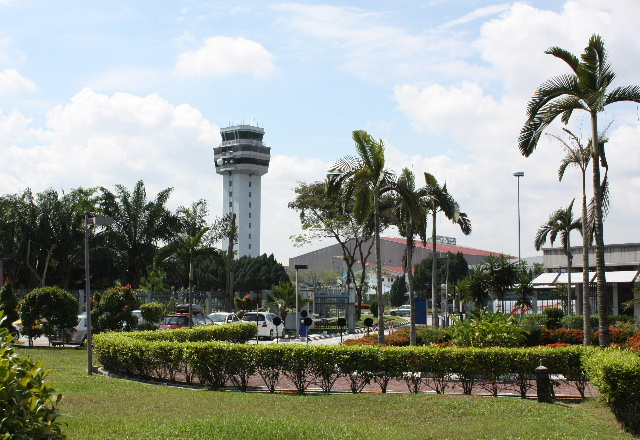
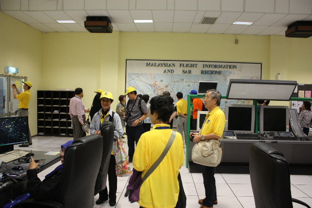 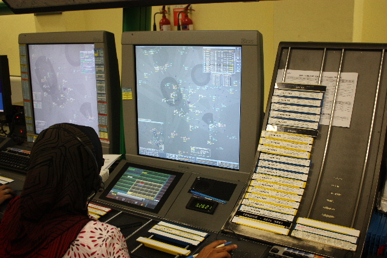 オペレーターはイスラム系の女性職員が多い
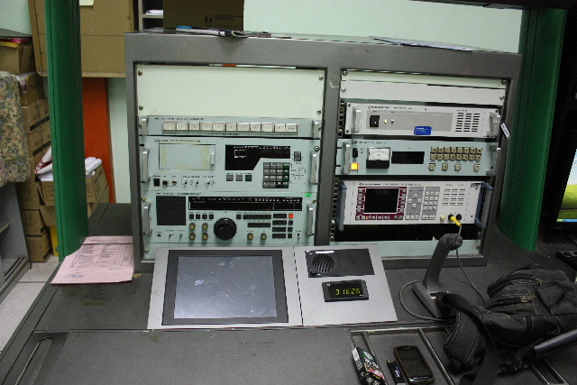 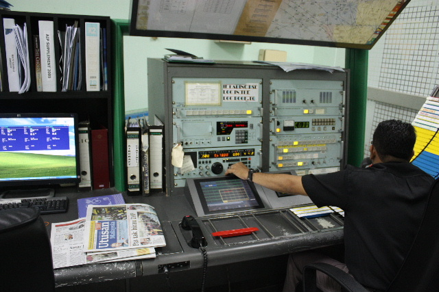 無線機は日本製(JRC)が使われている
2012 Kuala Lumpur |
 |
Eye Ball Album |